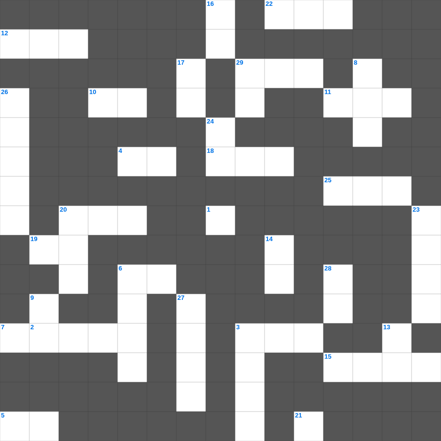

역대상: 다윗의 준비
📌 서비스 정의
십자가로세로는 교회 주보와 주일학교에서 사용할 수 있는 성경 기반 가로세로 퍼즐 서비스입니다. 성경 인물, 사건, 핵심 구절을 바탕으로 제작되었습니다. 온라인 풀이 및 인쇄 기능을 제공합니다.
역대상의 말씀을 퀴즈로 배우는 역대상 주일학교 퀴즈입니다. 가로 힌트와 세로 힌트를 보고 35개의 단어를 맞춰보세요. 인쇄도 가능하고 정답 확인도 바로 되니 소그룹 모임이나 가정 예배 시간에도 활용하실 수 있습니다.

📝 가로 힌트
1. 여로보암이 만든 벧엘과 단
2. 여로보암이 세운 금송아지
3. 솔로몬의 지혜의 근원
4. 역대상 시작부분에 길게 나오는 것
5. 다윗이 궁정에서 세운 반차
6. 성전을 수리한 여호아스
7. 성전 안의 등잔대 재료
10. 솔로몬이 성전 건축 전 받은 것
11. 레위 지파 중 하나
12. 요셉의 아들 므낫세
15. 다윗이 맡긴 재물
18. 성전에 있던 거룩한 기구
19. 바벨론에 멸망당한 유다
20. 다윗이 성전 건축을 맡긴 아들
21. 번제단의 재료
22. 엘리사가 기름을 부은 예언자
25. 성전에 두었던 물두멍
29. 레위 자손 중 찬양하는 직분
📝 세로 힌트
2. 다윗이 성전 기구를 만든 금
3. 여로보암이 세운 이스라엘 왕
6. 다윗이 세운 수문지기
8. 다윗이 번제와 화목제를 드린 곳
9. 노래하는 자들이 찬양할 때 사용한 것
13. 다윗이 제비로 나눈 반차
14. 성전 건축의 모델을 받은 곳
16. 다윗이 성전 건축을 위해 모은 것
17. 성전에 가득했던 하나님의 임재
20. 성전을 짓고 봉헌한 왕
20. 성전 건축의 사명을 받은 아들
23. 성전 찬양의 악기
24. 다윗이 솔로몬에게 전한 말
26. 예루살렘 성전이 불탄 해
27. 유다의 수도
28. 여호사밧의 아들 요람
29. 홍수 후 족보의 중심
🧑🏫 교회 교육 자료 활용
이 퍼즐은 주일학교 교재 추천 자료로 활용할 수 있고, 주일학교 주보에 넣기 좋은 분량으로 구성되어 있습니다. 수업용 주일학교 교안에 활동지로 붙이거나, 예배 후 복습용 주일학교 공과교재로 바로 사용할 수 있습니다.
🏷️ 키워드
역대상 주일학교 퀴즈, 역대상, 십자가로세로, 성경퀴즈, 말씀퀴즈, 가로세로퍼즐, 주일학교 교재 추천, 주일학교 주보, 주일학교 교안, 주일학교 공과교재